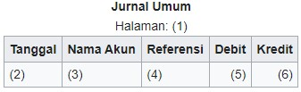
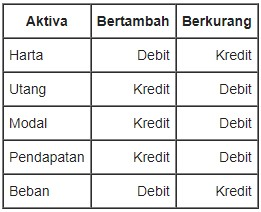

Day-Dream App!
Tidak perlu ribet untuk menghitung dan membuat laporan keuangan, melihat jurnal harian, mingguan, dan bulanan untuk Usahamu. Day-Dream UMKM menyediakan semuanya dalam 1 kali KLIK!
Sistem informasi Akuntansi
Sistem Informasi Akuntansi (SIA) adalah sebuah sistem informasi yang menangani segala sesuatu yang berkenaan dengan akuntansi. Akuntansi sendiri sebenarnya adalah sebuah sistem informasi. Faktor–faktor yang dipertimbangkan dalam penyusunan sistem informasi akuntansi: Sistem informasi akuntansi yang disusun harus memenuhi prinsip:
- Cepat yaitu sistem informasi akuntansi harus menyediakan informasi yang diperlukan dengan cepat dan tepat waktu serta dapat memenuhi kebutuhan dan kualitas yang sesuai.
- Aman yaitu sistem informasi harus dapat membantu menjaga keamanan harta milik perusahan.
- Murah yang berarti bahwa biaya untuk menyelenggarakan sistem informasi akuntansi tersebut harus dapat ditekan sehingga relatif tidak mahal.
Fungsi Sistem Informasi Akuntansi
Fungsi Sistem Informasi Akuntansi Sistem keuangan yang menyediakan informasi memiliki beberapa fungsi dalam keberlangsungan usaha. Berikut beberapa fungsi dari Sistem Informasi Akuntansi adalah:
- Mengumpulkan semua data kegiatan bisnis perusahaan dan menyimpan data tersebut secara efektif dan efisien.
- Mengambil data yang diperlukan dari berbagai sumber dokumen yang berkaitan dengan aktivitas bisnis.
- Membuat dan mencatat data transaksi dengan benar ke dalam jurnal-jurnal yang diperlukan dalam proses akuntansi sesuai dengan urutan dan tanggal terjadinya transaksi.
- Mengubah sekumpulan data menjadi informasi keuangan yang dibutuhkan perusahaan.
- Sebagai suatu sistem pengendali keuangan, agar tidak terjadi suatu kecurangan.
Fitur-Fitur Daydream
Pada Akuntansi ini ada beberapa fitur yang menjadi pengembang agar aplikasi mudah digunakan untuk user nantinya. Berikut beberapa fitur, diantaranya :
Data Akun Jurnal umum Buku Besar
Akun Akuntansi
Akun merupakan media akuntansi untuk mencatat transaksi keuangan yang mengakibatkan terjadinya perubahan aktiva, utang, modal, pendapatan, dan beban. Dalam pencatatan itu, akun akan digolongkan berdasarkan transaksi-transaksi yang sejenis. Pada akhirnya pencatatan dan penggolongan akun tersebut akan digunakan sebagai dasar dalam penyusunan laporan keuangan.
Dalam dunia akuntansi, penggolongan akun dilakukan untuk memenuhi tiga tujuan utamanya, yaitu:
- Menunjukkan tempat pencatatan unsur aktiva, kewajiban, modal, pendapatan, beban, dan prive.
- Menunjukkan pertumbuhan atau pengurangan unsur-unsur harta, utang, modal, pendapatan, beban, dan prive.
- Menjadi sumber informasi mengenai posisi harta, utang, modal, dan perubahannya.
Jurnal Umum
Jurnal umum adalah jurnal standar yang dibentuk secara umum. Jurnal sendiri merupakan catatan akuntansi permanen yang pertama setelah bukti transaksi dan digunakan untuk mencatat transaksi keuangan perusahaan secara kronologis. Jurnal ini menjadi tempat pembukuan berpasangan dilakukan dengan mencatat akun-akun yang didebit dan akun-akun yang dikredit. Total debit dan total kredit harus sama agar persamaan akuntansi tetap terpenuhi.
Bentuk jurnal umum adalah sebagai berikut : 
Sebelum bukti transaksi keuangan dicatat dalam jurnal, terlebih dahulu dilakukan analisis untuk menentukan pengaruhnya terhadap akun-akun di perusahaan. Pola pencatatan transaksi dalam jurnal diatur dalam sebuah mekanisme debit dan kredit. Debit terletak di sebelah kiri dan kredit terletak di sebelah kanan.
Mekanisme debit dan kredit terlihat dalam tabel berikut : 
Buku Besar
Buku besar adalah buku yang berisi kumpulan akun-akun perkiraan yang terkait dengan pencatatan transaksi keuangan yang mengikhtisarkan buku pembantu yang berisi semua daftar perubahan laporan keuangan dari suatu entitas atau perusahaan. Buku besar merupakan dasar pembuatan laporan neraca dan laporan laba rugi.
- Fungsi Buku Bsear Berikut Fungsi-fungsi dari buku besar :
- Alat untuk meringkas data transaksi yang telah dicatat dalam buku jurnal umum.
- Sebagai dasar penggolongan transaksi yang ada pada jurnal sebelumnya atau jurnal umum.
- Sebagai bahan kelengkapan dalam penyusunan laporan keuangan.
- Manfaat Buku Besar Buku besar juga memiliki manfaat bagi para akuntan untuk merapikan laporannya, manfaat buku besar diantaranya:
- Menyeimbangkan berbagai laporan keuangan.
- Memiliki rekam jejak utama laporan keuangan.
- Bisa memberikan petunjuk terhadap aktivitas transaksi yang ganjil atau tidak biasa.
- Bisa membantu menunjukkan adanya manipulasi data atau tindak kecurangan dalam pencatatan.
Laporan Laba rugi
Laporan laba rugi adalah bagian dari laporan keuangan suatu perusahaan yang dihasilkan pada suatu periode akuntansi yang menjabarkan unsur-unsur pendapatan dan beban perusahaan sehingga menghasilkan suatu laba bersih.
- Fungsi Laba rugi adalah menunjukkan performansi atau kinerja keuangan perusahaan. Seluruh pendapatan dan biaya atau beban disajikan dalam laporan ini. Informasi yang disajikan tersebut dapat juga digunakan untuk mengevaluasi kinerja perusahaan pada masa sebelumnya.
- Tujuan tujuannya adalah untuk mengkomunikasikan profitabilitas dan aktivitas bisnis perusahaan dengan pengguna akhir dan para pemangku kepentingan.
Neraca Saldo
Neraca saldo adalah laporan yang mencantumkan saldo semua akun buku besar perusahaan pada titik waktu tertentu. Akun yang terdapat pada neraca saldo berhubungan dengan semua item akuntansi utama, yaitu aset , kewajiban, ekuitas, pendapatan, pengeluaran, keuntungan, serta kerugian.
Hal ini terutama digunakan untuk mengidentifikasi saldo debet dan entri kredit dari transaksi yang dicatat dalam buku besar pada titik waktu tertentu. Setiap perusahaan mempersiapkan neraca saldo secara rutin, yang umumnya dilakukan setiap akhir periode pelaporan. Tujuan umum pembuatan neraca saldo adalah untuk memastikan entri dalam sistem pembukuan perusahaan secara matematis benar.
Neraca saldo mencakup daftar semua total akun buku besar. Setiap akun perlu disertakan nomor akun, deskripsi akun, beserta saldo debit / kredit di akhirnya. Selain itu, harus menyatakan tanggal akhir periode akuntansi pembuatan laporan.
Akuntansi sebagai sistem informasi memberi makna di mana akuntansi berperan sebagai proses identifikasi, pengukur, dan pelapor informasi keuangan. Informasi ini bisa digunakan baik pada perusahaan berprofit atau perusahaan nonprofit. Informasi ini akan sangat bermanfaat bagi para pemakai informasi akuntansi. Melalui informasi ini, diharapkan perusahaan jadi bisa menilai dan mengambil keputusan yang tepat dalam hal keuangan.